История отношений между Советским Союзом и Египтом — это история взлётов и падений: от идеологической неприязни в 1920-е годы до дипломатического признания (1943), пика сотрудничества в эпоху Насера (1955–1970), строительства Асуанской плотины и, наконец, до охлаждения и разрыва при Садате (1972–1976).
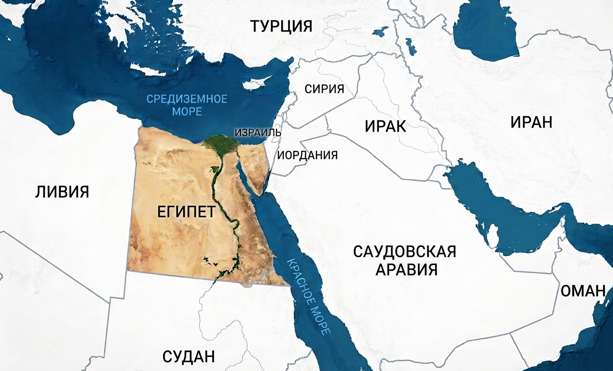
После Октябрьской революции 1917 года Советская Россия воспринималась египетской монархией и британскими властями как угроза. Египет (формально независимый с 1922 года, но фактически под британским контролем) не спешил устанавливать отношения с «центром мировой революции». Коминтерн, в свою очередь, видел в Египте объект антиимпериалистической борьбы, но реальных рычагов влияния не имел. В 1920-е – 1930-е годы контакты были эпизодическими и в основном через Коммунистическую партию Египта (В январе 1923 Александрийская секция Социалистической партии Египта (основана в 1921 году) во главе с Хусни Аль-Ораби в ходе проведенного ею в окрестностях Александрии съезда провозгласила себя Египетской коммунистической партией), которая находилась в глубоком подполье и подвергалась репрессиям.
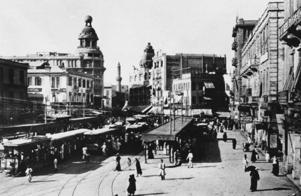
Перелом наступил во время Второй мировой войны. В 1943 году, в условиях борьбы с нацистской Германией, СССР и Египет (формально нейтральный до 1945 года) установили дипломатические отношения. Это было прагматичное решение: Москва стремилась расширить своё присутствие на Ближнем Востоке, а Каир искал противовес британскому доминированию. 26 августа 1943 года было подписано соглашение об обмене дипломатическими миссиями — с этого момента начинается официальная история двусторонних отношений. На фото Иван Михайлович Майский (полномочный посол СССР в Великобритании (1932—1943). Именно он подписал это соглашение)
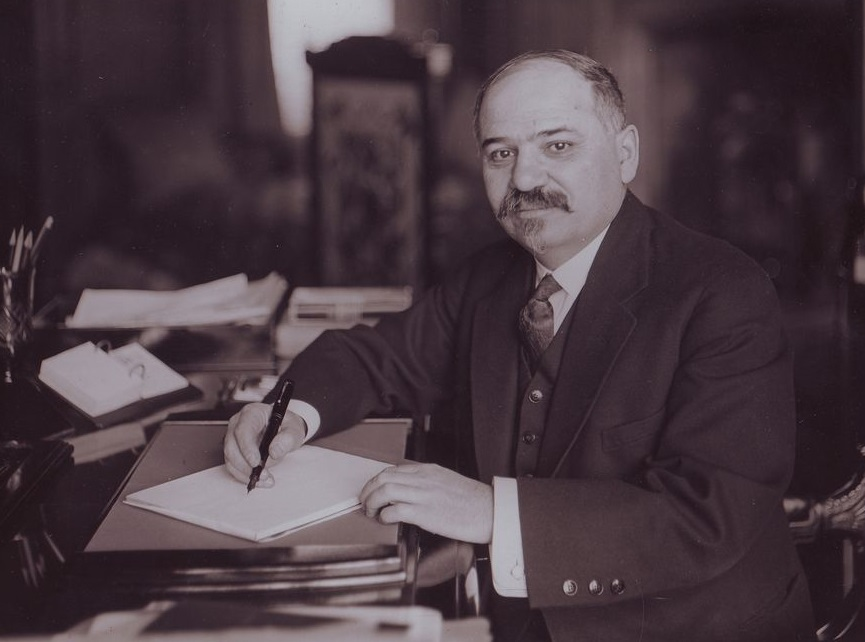
После свержения монархии «свободными офицерами» во главе с Нагибом и Насером Египет начал искать альтернативу западному влиянию. Отказ США и Великобритании финансировать Асуанскую плотину (1956) стал решающим моментом. СССР предложил более выгодные условия, и в 1955 году через Чехословакию был заключён первый крупный военный контракт — поставки МиГ-15, танков Т-34, артиллерии. Это стало началом системного военно-технического сотрудничества. 23 июня 1956 года Гамаль Абдель Насер был избран президентом Египта. В мае 1964-го во время официального визита Хрущева в Объединенную Арабскую Республику, объединявшую тогда нынешние Египет, Сирию и отчасти Ирак, Насер наградил советского лидера орденом Нила. На фото Никита Хрущев и Насер
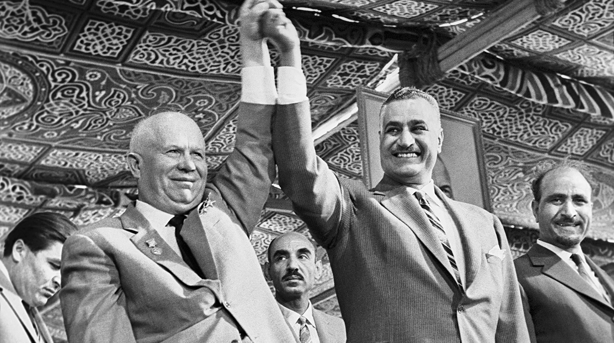
Национализация Суэцкого канала привела к тройственной агрессии (Англия, Франция, Израиль). СССР выступил с ультиматумом, пригрозив ракетными ударами по Парижу и Лондону. Это остановило интервенцию и сделало СССР главным защитником арабского мира. Престиж Насера достиг пика, а советско-египетские отношения перешли в фазу стратегического союза.
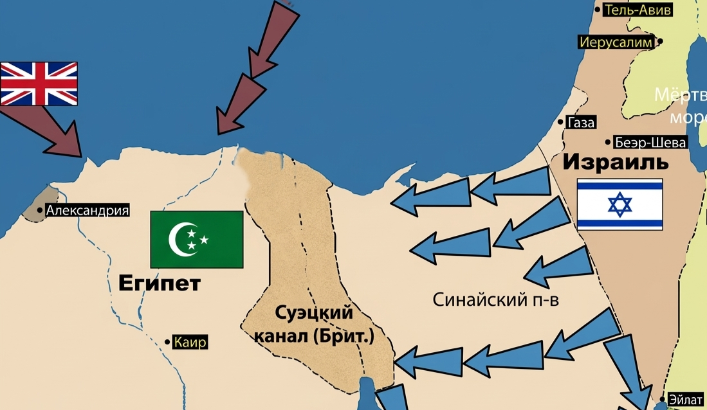
Строительство Асуанской высотной плотины (1960–1970) стало крупнейшим советским инфраструктурным проектом за рубежом. СССР предоставил кредиты на сумму более 1 млрд рублей, поставил оборудование, направил свыше 2000 инженеров и рабочих. Плотина позволила регулировать сток Нила, предотвратить наводнения, оросить миллионы гектаров и дала стране электроэнергию. 12 советских специалистов получили звание Героя Социалистического Труда. Это был пик советско-египетской дружбы.
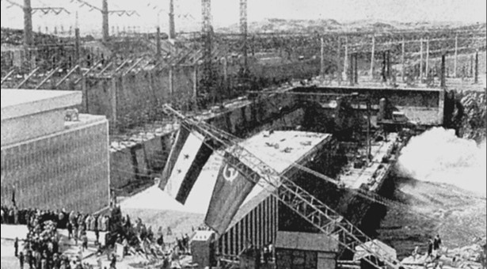
СССР поставил Египту более 500 самолётов (МиГ-17, МиГ-19, МиГ-21, Ту-16), 1200 танков (Т-34, Т-54, Т-55), ракетные катера, системы ПВО (С-75). Советские военные советники участвовали в подготовке египетской армии. После поражения в Шестидневной войне (1967) СССР экстренно восстановил вооружённые силы Египта, отправив эскадру кораблей и зенитные ракетные дивизионы. В 1970 году в Египте находилось около 20 000 советских военных специалистов.
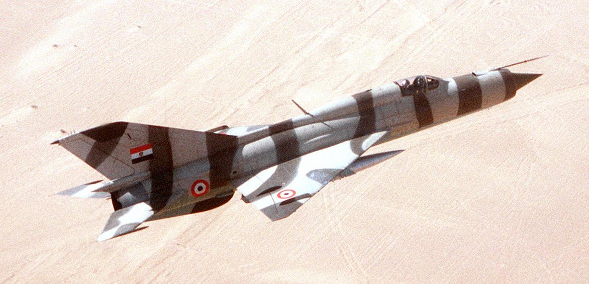
СССР помог построить Хелуанский металлургический комбинат (стал основой египетской чёрной металлургии), Асуанскую плотину, ряд энергетических объектов. Тысячи египетских студентов учились в советских вузах. В Каире и Александрии работали культурные центры. Это сформировало целое поколение египетской интеллигенции, ориентированной на советскую модель.
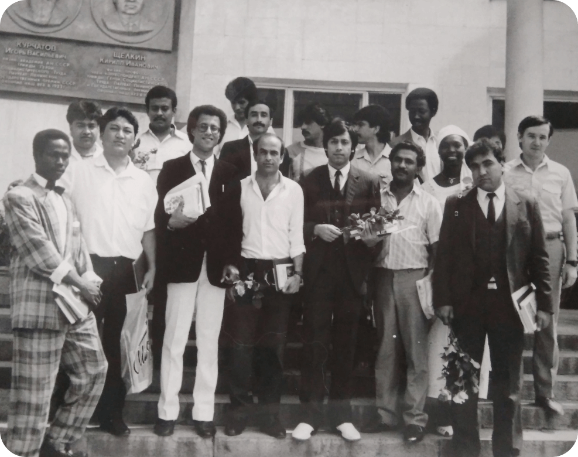
После смерти Насера (28 сентября 1970) новый президент Анвар Садат сначала продолжил курс на сотрудничество с Москвой. 27 мая 1971 года в Каире был подписан «Договор о дружбе и сотрудничестве между СССР и Египтом» сроком на 15 лет. Документ предусматривал консультации при возникновении угрозы миру, развитие экономических связей и военное сотрудничество. Однако уже в 1972 году Садат, недовольный тем, что СССР не даёт наступательного оружия для войны с Израилем, выслал 20 000 советских военных специалистов. Это стало первым серьёзным ударом по отношениям. На фото представлены Николай Викторович Подгорный и Анвар Садат, они подписали договор о дружбе и сотрудничестве между СССР и Египтом
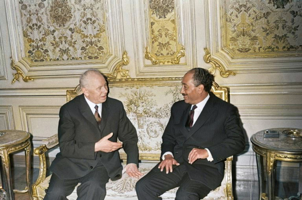
Несмотря на высылку советников, СССР продолжал поставлять оружие. В октябре 1973 года Египет и Сирия начали войну против Израиля. Советское оружие (ПВО, танки, ракеты) сыграло ключевую роль. СССР использовал море и воздух для снабжения, а также направил военных специалистов (уже неофициально). Однако после войны Садат начал открыто сближаться с США, что вызвало недовольство Москвы.
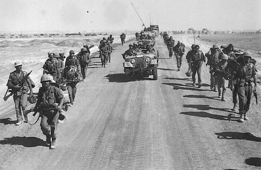
В марте 1976 года Садат в одностороннем порядке денонсировал Договор о дружбе с СССР, запретил заход советских кораблей в египетские порты и аннулировал соглашение о военном сотрудничестве. Это был финал советско-египетского союза. В 1977 году Садат посетил Иерусалим, а в 1979 году Египет подписал Кэмп-Дэвидские соглашения с Израилем, окончательно переориентировавшись на США. СССР разорвал дипломатические отношения (восстановлены только в 1984 году, уже после смерти Садата). На фото президент Египта Анвар Садат и президент США Джимми Картер во время встречи в Вашингтоне, март 1979 года
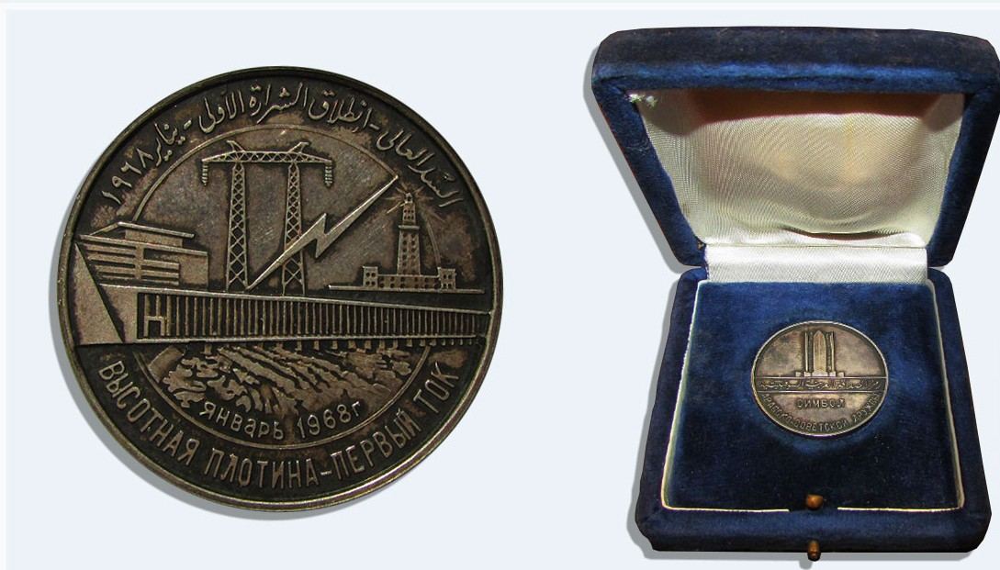
Советско-египетские отношения — классический пример того, как геополитический союз может возникнуть, достичь пика и разрушиться за два десятилетия. Главные итоги:
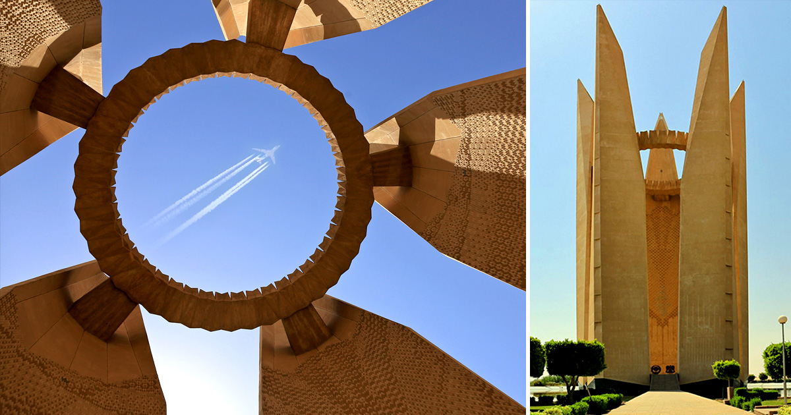
Материалы готовятся
Материалы готовятся
Материалы готовятся
Материалы готовятся
Материалы готовятся
Материалы готовятся
Материалы готовятся
Материалы готовятся
Материалы готовятся
Материалы готовятся
Материалы готовятся